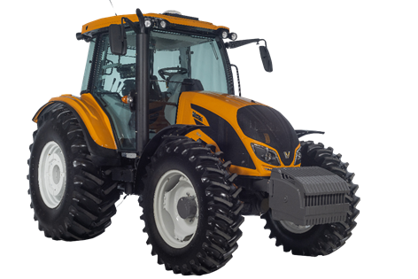

O trator se consolidou como uma importante máquina agrícola apenas há 100 anos , antes disso predominava o uso da tração animal. No entanto, desde a Revolução Industrial, na qual os trabalhadores humanos passaram a exercer atividades em fábricas, ao invés de plantio para subsistências, foi necessário investir em tecnologias que suprissem essa mão de obra humana no campo. A partir daí, o motor a vapor começou a ganhar popularidade e evoluir tecnologicamente.
A máquina é constituída por um robusto chassi e motor extremamente potente. Dessa forma, com um alto rendimento, o trator pode ser utilizado em diversas tarefas pesadas, sejam elas agrícolas ou industriais. Principais atividades do trator:
Sua energia é gerada a partir de queima de combustível, o mais utilizado para essa finalidade é o óleo diesel. Além disso, esse tipo de maquinário pode ser encontrado em duas diferentes formas de locomoção: pneus (2RM ou 4RM) ou esteira. A escolha entre esses modelos deve ser feita de acordo com a necessidade de potência e aderência do solo.
O trator ajuda na lavoura na lavoura na hora o plantioa te na colheita
